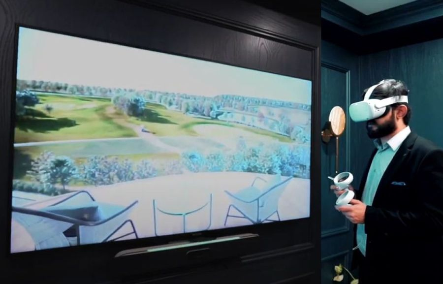

Choosing immersive technology for a live event
Projection, LED, interactive sensors, AR and spatial audio each solve a different experience problem.

Projection, LED, interactive sensors, AR and spatial audio each solve a different experience problem. This field note explains the decisions that keep an ambitious visual idea clear, practical and reliable at event scale.
Start with the audience action
Choose technology after defining what visitors should feel or do. A crowd watching one shared reveal needs a different system from individuals exploring at their own pace. Write the intended audience journey in simple actions before comparing hardware.
Use projection when the surface matters
Projection can transform existing architecture, scenery and unconventional shapes without covering them permanently. It works well for large shared moments and rapid visual change. Its success depends on controlled light, suitable surfaces and clear projector positions.
Use LED when light cannot be controlled
LED displays provide strong brightness and predictable contrast in busy environments. They suit daylight, broadcast and content requiring crisp detail. Physical weight, viewing distance, pixel pitch and the visual presence of the panels must be considered from the beginning.

Add interaction only when it changes the experience
Tracking, touch and sensors can make an installation responsive, but response should be immediate and understandable. Visitors need to see the connection between action and result. Design a graceful passive state so the experience still works when nobody is interacting.
Use AR for personal layers
Augmented reality can reveal information or imagery through a visitor's phone or a dedicated device. It is useful when content benefits from individual choice. Device compatibility, onboarding, network access and the social cost of looking through a screen are part of the design.

Treat sound as spatial material
Audio directs attention, gives scale to images and connects areas of a venue. Plan loudspeaker positions, delay and sound spill alongside the visual system. A restrained spatial soundscape can often create more immersion than adding another visual effect.
Planning an immersive project?
Share the site, audience, date and creative ambition with AKS Creative Studio.
Start a conversation ↗